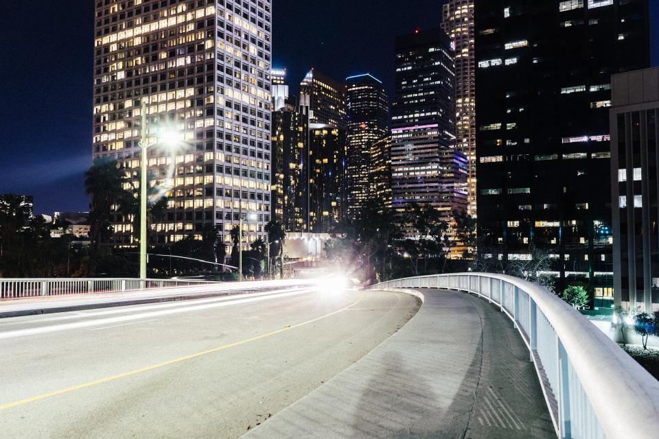

Vår verksamhet
Aktien är noterad sedan 1989. Koncernen äger hela kedjan – täkter, cementugnar, hamnar, fartyg och betongstationer – och har bestämt att cementen ska vara klimatneutral 2035 med koldioxidavskiljning vid fabriken på Gotland.
Vad behöver ditt bygge?

Cement
Tre ugnar på Gotland, i Skövde och i estniska Rakvere bränner kalksten till klinker. Cementen skeppas med egna fartyg till sex terminaler.
Produktionen var 4,1 miljoner ton 2025, varav 62 procent klimatförbättrad.

Fabriksbetong
118 stationer i Sverige, Finland och Baltikum blandar betong efter beställning. Bilarna når nästan alla byggen inom 45 minuter.
5,8 miljoner kubikmeter levererades 2025.

Ballast
Sand, grus och krossberg från 64 täkter till vägbyggen, järnväg och betongstationer. Allt större del kommer från återvunnen betong och schaktmassor.
31 miljoner ton ballast, varav 14 procent återvunnet material.

Industrikalk
Bränd kalk och kalkstensmjöl till stål, massa, papper och vattenrening. Leveranserna går ofta på långa avtal direkt till kundens silo.
Kalken levereras till 46 industrikunder i fem länder.
Från berg till bjälklag
- 1

Brytning
Kalkstenen bryts i etapper och krossas direkt i täkten, så att bara rätt fraktion transporteras vidare.
- 2

Bränning
I ugnen värms kalkstenen till 1 450 grader och blir klinker, som mals med gips och tillsatser till cement.
- 3

Frakt
Egna fartyg tar cementen till terminaler i Stockholm, Göteborg, Norrköping, Helsingfors, Riga och Tallinn.
- 4

Leverans till bygget
Betongstationen blandar efter recept och bilen kör direkt till formen, med pump om det behövs.